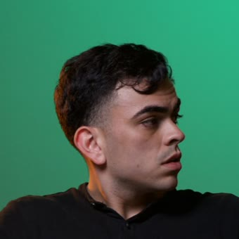
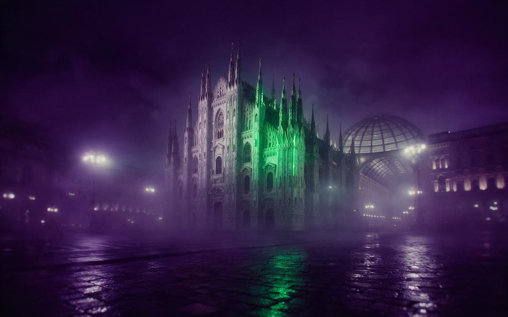
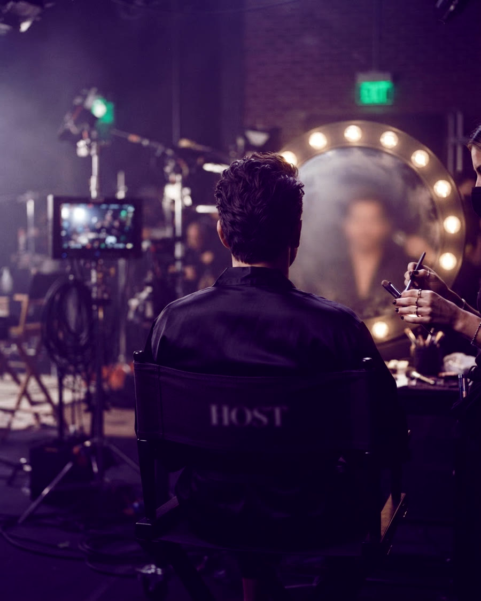
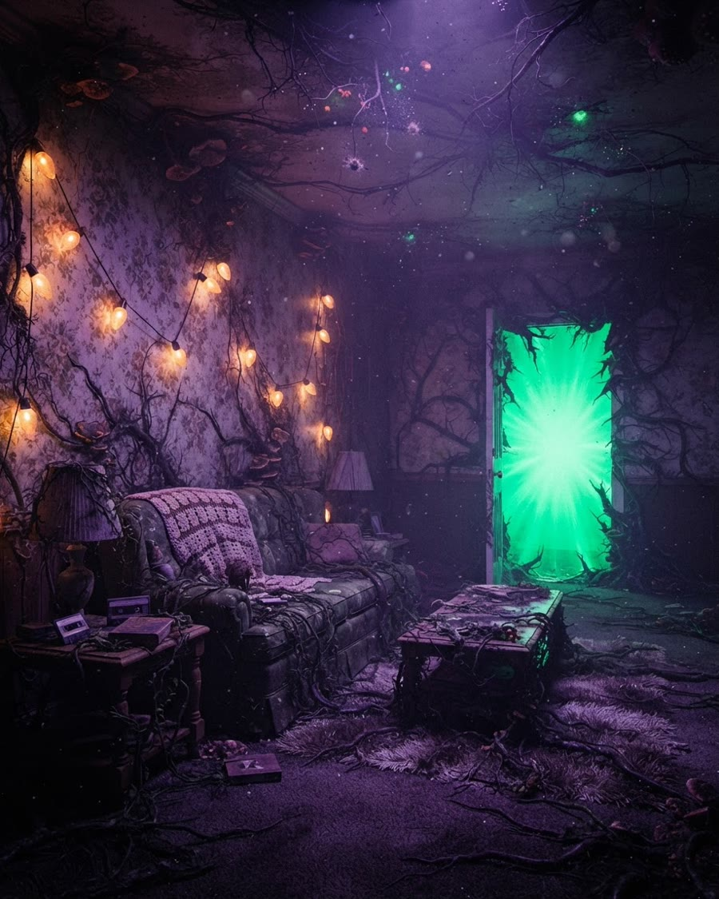
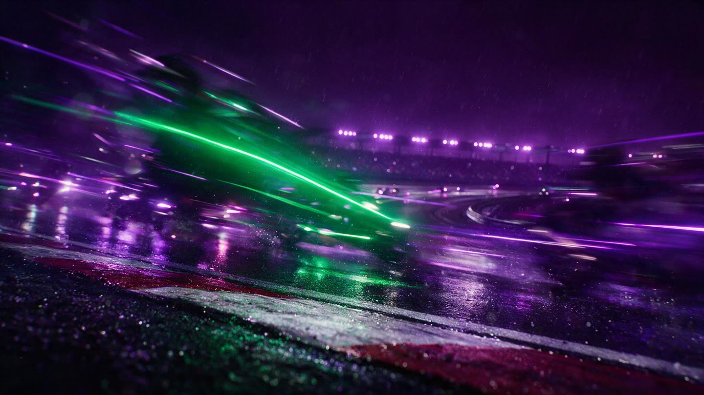
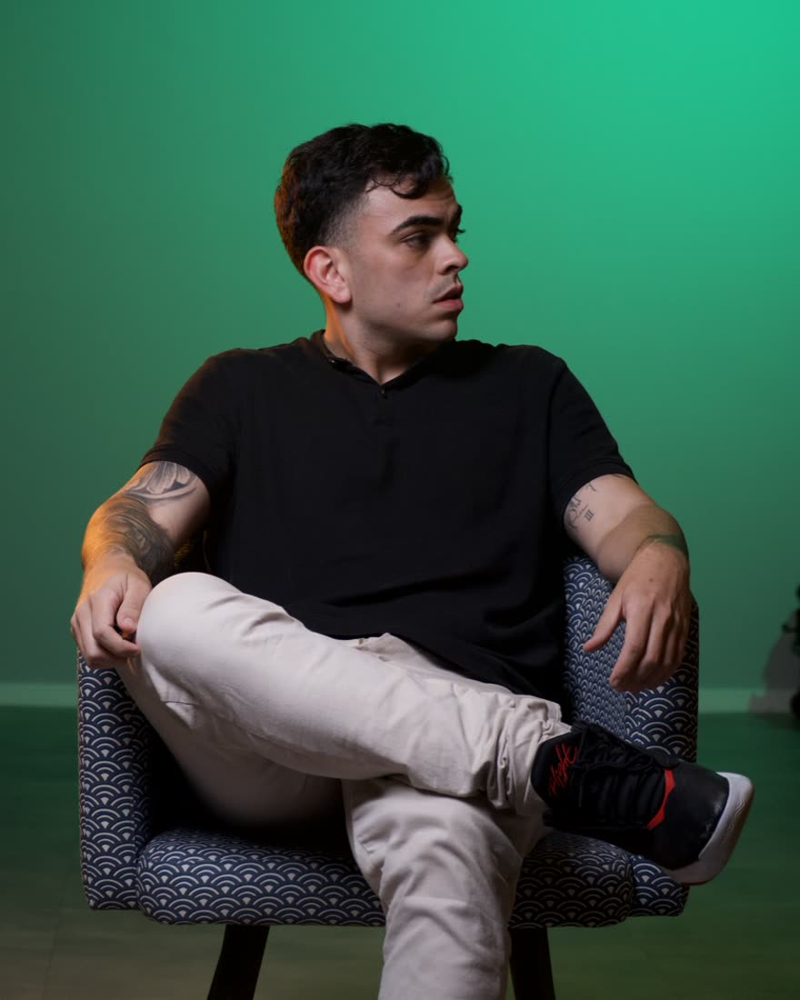

Para marca que precisa de vídeo toda semana, não uma vez por mês. Você não contrata uma peça. Contrata a operação inteira.
Cinco meses seguidos acima de 250 arquivos por mês.
Escolhidos por ele. Cada um abre no post original.




O número da dobra explicado. E os três que sustentam ele.
Uma entrega vira quatro arquivos, em média: mesma gravação, mesma direção, quatro cortes que podem ir para o ar. É por isso que o volume sobe sem que o prazo suba junto. É isso que uma marca compra quando precisa publicar toda semana.
Sem intermediário, sem repasse, sem telefone sem fio. Você fala com quem edita.

Cinco anos fazendo vídeo para marca grande. Os últimos dois construindo a máquina que entrega no volume que a operação pede.
Hugo Ouvidio · hugoleonardo1312@gmail.com